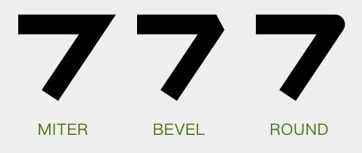

- 1. API
- 1.1. 颜色设置
- 1.2. Shader设置
- 1.3. 颜色滤镜
- 1.4. setXfermode
- 1.5. 设置抗锯齿
- 1.6. setStyle
- 1.7. 线条形状
- 1.8. setStrokeCap
- 1.9. setStrokeJoin
- 1.10. setStrokeMiter
- 1.11. 色彩优化
- 1.12. setPathEffect
- 1.13. CornerPathEffect
- 1.14. DiscretePathEffect
- 1.15. 绘制虚线
- 1.16. SumPathEffect
- 1.17. ComposePathEffect
- 1.18. setShadowLayer
- 1.19. setMaskFilter
- 1.20. 文字相关
- 1.20.1. setTextSize
- 1.20.2. setTypeface
- 1.20.3. setFakeBoldText
- 1.20.4. setStrikeThruText
- 1.20.5. setUnderlineText
- 1.20.6. setTextSkewX
- 1.20.7. setTextScaleX
- 1.20.8. setLetterSpacing
- 1.20.9. setFontFeatureSettings
- 1.20.10. setTextAlign
- 1.20.11. setTextLocale
- 1.20.12. setHinting
- 1.20.13. getFontSpacing
- 1.20.14. getTextBounds
- 1.20.15. measureText
- 1.20.16. getTextWidths
- 1.20.17. breakText
- 1.21. 光标相关
- 2. 参考
API
颜色设置
1 |
|
Shader设置
在 Android 的绘制里使用 Shader ，并不直接用 Shader 这个类，而是用它的几个子类。具体来讲有：
- LinearGradient：线性渐变
- RadialGradient：辐射渐变
- SweepGradient：扫描渐变
- BitmapShader
- ComposeShader：混合着色器
在设置了 Shader 的情况下， Paint.setColor/ARGB() 所设置的颜色就不再起作用。
1 |
|
PorterDuff.Mode 是用来指定两个图像共同绘制时的颜色策略的。它是一个 enum，不同的 Mode 可以指定不同的策略。参考：
https://developer.android.com/reference/android/graphics/PorterDuff.Mode.html
颜色滤镜
- ColorFilter
- LightingColorFilter
- PorterDuffColorFilter
- ColorMatrixColorFilter
1 |
|
setXfermode
1 |
设置抗锯齿
抗锯齿默认是关闭的，如果需要抗锯齿，需要显式地打开。另外，除了 setAntiAlias(aa) 方法，打开抗锯齿还有一个更方便的方式：构造方法。
创建 Paint 对象的时候，构造方法的参数里加一个 ANTI_ALIAS_FLAG 的 flag，就可以在初始化的时候就开启抗锯齿。
1 |
|
setStyle
1 |
|
线条形状
- setStrokeWidth(float width)
- setStrokeCap(Paint.Cap cap)
- setStrokeJoin(Paint.Join join)
- setStrokeMiter(float miter)
1 | paint.setStyle(Paint.Style.STROKE); |
setStrokeCap
线头形状有三种：
- BUTT 平头（默认）
- ROUND 圆头
- SQUARE 方头。

1 |
setStrokeJoin
- MITER 尖角
- BEVEL 平角
- ROUND 圆角。

setStrokeMiter
这个方法是对于 setStrokeJoin() 的一个补充，它用于设置 MITER 型拐角的延长线的最大值。
色彩优化
1 |
|
setPathEffect
使用 PathEffect 来给图形的轮廓设置效果。对 Canvas 所有的图形绘制有效，也就是 drawLine() drawCircle() drawPath() 这些方法。
CornerPathEffect
把所有拐角变成圆角
1 | PathEffect pathEffect = new CornerPathEffect(20); |
DiscretePathEffect
把线条进行随机的偏离，让轮廓变得乱七八糟。乱七八糟的方式和程度由参数决定。
1 |
|
绘制虚线
1 |
|
SumPathEffect
1 | PathEffect dashEffect = new DashPathEffect(new float[]{20, 10}, 0); |
ComposePathEffect
setShadowLayer
在之后的绘制内容下面加一层阴影
1 | paint.setShadowLayer(10, 0, 0, Color.RED); |
setMaskFilter
为之后的绘制设置 MaskFilter。上一个方法 setShadowLayer() 是设置的在绘制层下方的附加效果；而这个 MaskFilter 和它相反，设置的是在绘制层上方的附加效果。
MaskFilter 有两种： BlurMaskFilter 和 EmbossMaskFilter
1 | paint.setMaskFilter(new BlurMaskFilter(50, BlurMaskFilter.Blur.NORMAL)); |
文字相关
setTextSize
设置字体大小
setTypeface
设置字体
setFakeBoldText
是否使用伪粗体
setStrikeThruText
是否加删除线
setUnderlineText
是否加下划线
setTextSkewX
设置文字横向错切角度
setTextScaleX
设置文字横向放缩
setLetterSpacing
设置字符间距
setFontFeatureSettings
用 CSS 的 font-feature-settings 的方式来设置文字
1 |
|
setTextAlign
设置文字的对齐方式。一共有三个值：LEFT CETNER 和 RIGHT。默认值为 LEFT。
setTextLocale
设置绘制所使用的 Locale
setHinting
设置是否启用字体的 hinting （字体微调）
getFontSpacing
获取推荐的行距
getTextBounds
获取文字的显示范围
measureText
测量文字的宽度并返回
getTextWidths
getTextWidths(String text, float[] widths)
获取字符串中每个字符的宽度，并把结果填入参数 widths
breakText
也是用来测量文字宽度的。但和 measureText() 的区别是， breakText() 是在给出宽度上限的前提下测量文字的宽度。如果文字的宽度超出了上限，那么在临近超限的位置截断文字。
光标相关
getRunAdvance
1 | /** |
getOffsetForAdvance
给出一个位置的像素值，计算出文字中最接近这个位置的字符偏移量（即第几个字符最接近这个坐标）。
1 |
|